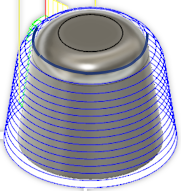

Parties supérieures en premier
Appliquer une coupe au niveau de toutes les parties supérieures en premier
Pentes en premier
Couper les parois en premier
Sélectionne l'ordre de coupe des zones en pentes et planes.
|
 |
Parties supérieures en premier |
Pentes en premier |